Writing models
Drafted with AI, not yet reviewed
A script is Rhai, a small scripting language with Rust-like syntax: let, fn, if, for, arrays ([1, 2]), maps (#{a: 1}) and closures.
This chapter is about what is particular to modelling with it.
Fields and trees
A script runs once. It does not compute shapes. It builds one expression per shape, a tree, which fidget evaluates later at millions of points to render or mesh it.
The variables x, y and z are trees for the coordinates.
Arithmetic on a tree builds a bigger tree.
The tree’s value at a point is the field there: negative inside, positive outside, zero on the surface.
A sphere of radius 10, written out from the coordinates.
sqrt(square(x) + square(y) + square(z)) - 10
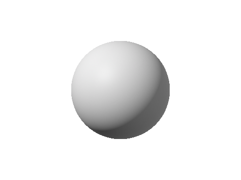
Shapes such as sphere and the prelude’s cuboid are functions that build such trees.
Transforms such as move build trees that evaluate their input at moved coordinates.
min and max of two fields are their union and their intersection.
Exact distances and bounds
Only the sign of the field decides the shape, but its values matter too:
- an exact field is the Euclidean distance to the surface, everywhere
- a bound never exceeds that distance, but may be smaller: its slope is at most 1
Offsets, shells, rounded combinations and clearances read the field as a distance.
offset(s, 1) grows a shape by exactly 1 only where the field of s is exact.
fidget’s box and rectangle are bounds beyond their edges and corners, so their offsets keep sharp corners.
The prelude’s cuboid and rect are exact, so their offsets have round corners.
Fidget’s rectangle and the prelude’s rect, both offset by 4; only the exact one gets round corners.
let sharp = rectangle([-30, -10], [-10, 10]).offset(4); let exact = rect(20).move([20, 0]).offset(4); union(sharp, exact)
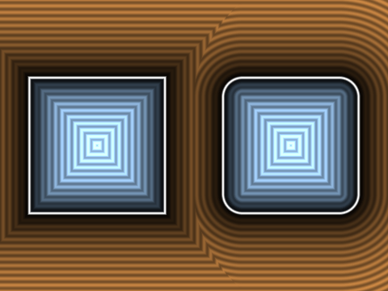
Every prelude function’s documentation says how exact its field is. Rules of thumb:
- moves, rotations and mirrors keep a field exact
min(union) of exact fields is exact outside, and a bound insidemax(intersection, difference) of exact fields is exact inside and near flat faces, and a bound beyond new edges- scaling multiplies distances (see
scale_exact), and twisting or bending distorts them - a field steeper than a distance, its slope above 1, breaks offsets:
offset(s, 1)moves its surface by less than 1
The sdf view shows how exact a field is: on an exact field the lines are evenly spaced, and round outside convex corners.
Numbers and trees
Rhai has integers and floats, and keeps them apart:
5 / 2is2, an integer division; write5.0 / 2or5 * 0.5-7 % 3is-1for numbers, butx % 3at x = -7 is2: fidget’s remainder on trees is never negative, andmodis that for numbers too- math functions give a number of numbers, integers too, and a tree of a tree:
sqrt(2)is a number,sqrt(x)a tree compare,and,or,not,mixandrandare fidget’s alone: given only numbers, they return a tree or fail
A tree where a shape wants a number fails with shape does not have an argument of type Tree.
In a .fidget script, fidget’s math functions turn an integer into a tree, so write sqrt(2.0) there.
The prelude’s functions take integers anywhere, and convert them.
Trees are 32-bit floats inside, and script arithmetic on numbers is 64-bit.
Choices without if
An if, a loop or a function call happens once, while the script runs.
The tree is evaluated later, at every point.
So if can depend on numbers, but never on a tree:
let teeth = 12; // a number: if and for work let gear = if teeth > 10 { ... } else { ... }; if x < 0 { ... } // a tree: an error
The second fails with cannot compare Tree types during function tracing.
Choices inside a tree are made by functions that the tree evaluates at every point:
min(a, b)andmax(a, b): the smaller or the larger valuecompare(a, b): -1, 0 or 1not(a): 1 whereais 0, else 0and(a, b)andor(a, b): logical operators on 0 and other values, which return one of their operands
if a < b { p } else { q } with trees becomes a sum: p times a factor that is 1 where a < b and 0 elsewhere, plus q times the opposite.
A post of radius 6 below z = 10 and of radius 3 above, chosen at every point.
let below = not(compare(z, 10) + 1); // 1 where z < 10, else 0 let r = below * 6 + (1 - below) * 3; (hypot(x, y) - r).intersection(slab([0, 20]))
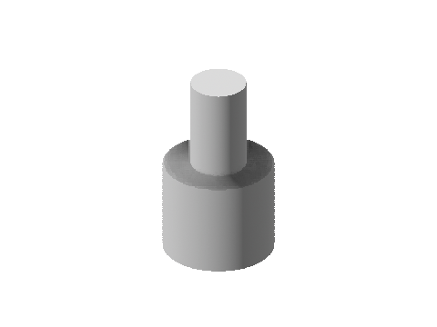
Many choices are min or max in disguise: abs(x) is a mirror, clamp is two of them, and a union is min.
Functions and constants
A Rhai fn sees its parameters, other functions, x, y, z and fidget’s constants.
It does not see the script’s let variables, and a function that reads one fails with Variable not found.
Declare such values with const at the top level, and read them as global::NAME inside functions.
A tray whose wall is a constant, read inside the function that makes it.
const WALL = 2.0; fn tray(size) { cuboid(size, #{anchor: "bottom"}) .shell(global::WALL) .intersection(z - size[2] + global::WALL) } draw(tray([40, 30, 15]));
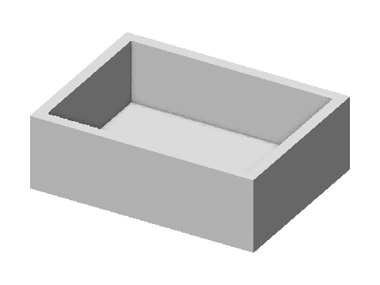
Closures, such as |r| circle(r + wall), capture the let variables around them, and are called with .call(...).
Rhai has no default arguments.
A function can have several definitions with different numbers of parameters instead.
Methods and chaining
Any of fidget’s functions can be called as a method on its first argument: circle(5).move([1, 2]) is move(circle(5), [1, 2]).
A chain reads in the order the transforms apply.
A pin along Z, laid along Y, then raised by 10.
cylinder(2, 20) .rotate_x(90) .move([0, 0, 10])
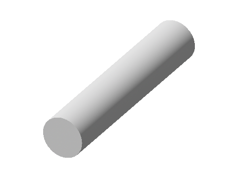
Rhai calls a function defined in a script as a method only through this.
fn grow(s, d) cannot be called as s.grow(d), which fails with Function not found: grow (Tree, ...).
Every prelude function whose first argument is a shape also has such a method form.
For a function of your own, write the method form as a second definition.
A function and its method form, which grows a square by 2.
fn grow(s, d) { s.offset(d) } fn grow(d) { grow(this, d) } draw(rect(20).grow(2));
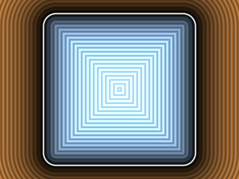
Calling shapes
fidget’s shapes take their fields as a map, or positionally.
Fields left out take their defaults: circle(3) is centred on the origin.
Two circles, the first with its fields in a map, the second with them in order.
union( circle(#{center: [-6, 0], radius: 3}), circle([6, 0], 4) )
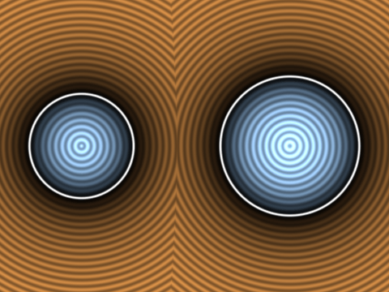
- Positional arguments are matched by type, so their order is free when every field’s type is different.
- A 2D vector stands in for a 3D one, the missing Z taking the field’s default.
- Two values of the same type are ambiguous:
circle(1, 2)quietly makes a circle of radius 2. - Shapes whose fields share types take every field, in order, as
rectangle(lower, upper)andextrude_z(shape, lower, upper)do:s.repeat_x(5, 0), nevers.repeat_x(5). - A transform called with a shape and a map, as in
s.rotate_x(#{angle: 30}), needs every field in the map, defaults included, or fails withfield center must be provided for RotateX. Without the map, defaults apply:s.rotate_x(30). - Vectors are arrays,
[1, 2]or[1, 2, 3], orvec2andvec3values. - A field of type Tree takes an array of trees in the map form, as their union.
Positional transforms reject arrays with
missing argument of type Tree, so wrap them:union(parts).move(...).
Drawing and colours
A script shows a shape by passing it to draw, any number of times.
draw_rgb(shape, r, g, b) draws it in a colour, each component from 0 to 1.
An array of shapes is drawn as their union.
The preview shows each drawn shape in its colour, and an export meshes the union of all of them.
An orange plate and a grey boss on it, drawn apart.
let base = cuboid([40, 30, 4], #{anchor: "bottom"}); let post = cylinder(6, [4, 10]); draw_rgb(base, 0.95, 0.55, 0.2); draw_rgb(post, 0.6, 0.6, 0.65);
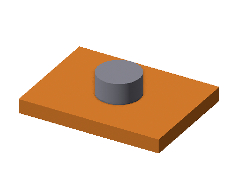
draw(shape, #{role: "score"}) says what a laser does along the shape’s outline in a 2D export; see Exporting for laser cutting.
The value of the script’s last expression is not drawn. A script that draws nothing gets a warning.
Bounds and resolution
bounds(lower, upper) sets the region to preview and export, from corner to corner.
A script calls it at most once.
Without it, the region is fitted to the drawn shapes; see Bounds.
A shape that pokes out of the script’s bounds gets a warning naming the sides, since export would cut it off.
A gyroid, a surface without end, shown and exported within a cube.
bounds([-15, -15, -15], [15, 15, 15]); let k = 0.5; let gyroid = sin(k * x) * cos(k * y) + sin(k * y) * cos(k * z) + sin(k * z) * cos(k * x); draw(abs(gyroid) - 0.3);
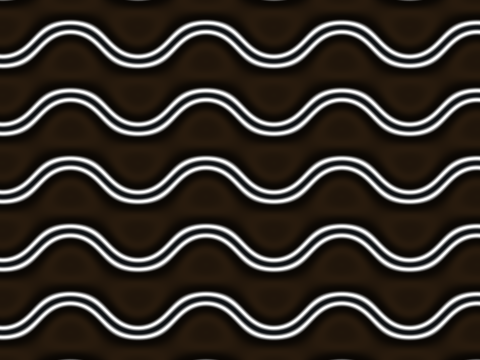
resolution(n) sets the export’s mesh cells per unit: 10 makes cells of 0.1 mm.
2D drawings
A 2D shape is a tree that never mentions z: circle, rectangle, and the prelude’s rect, polygon, stroke and others.
Drawn as it is, it is an endless prism along Z.
The preview opens it in the sdf view, sliced at z = 0.
2D shapes combine as 3D ones do, with min, max, difference and the prelude’s rounded combinations.
They become solids in several ways:
extrude, straight up, or twisting, scaling and moving as it rises, with rounded or chamfered rimsrevolve, around the Z axis, a whole turn or part of oneloft, through several profiles stacked along Zsweep, along a path of lines, arcs and helices, andhelix- fidget’s own
extrude_zandloft_z
Each takes the profile’s slice at z = 0, so any 2D tree can be made a solid.
A plate with a slot, drawn in 2D, then extruded 3 high.
let plate = rect([30, 20], #{round: 3}); let slot = stroke([[-8, 0], [8, 0]], 4); plate.difference(slot).extrude([0, 3])
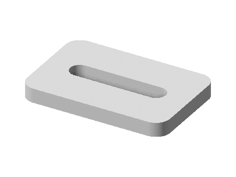
Text and SVG
text and svg make 2D shapes from outlines: letters in a font, and the shapes of an SVG file.
Both are exact distance fields, so offset, shell and the rounded combinations work on them as they do on rect.
A tag with its label sunk 0.6 mm into it.
let label = text("M3", #{ size: 4, halign: "center", valign: "center", }); let plate = cuboid([20, 10, 2], #{anchor: "bottom"}); plate.difference(label.extrude([1.4, 3]))
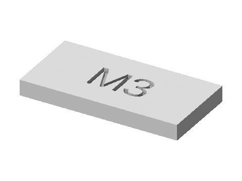
text(string, options) takes a map of options, any of them left out:
size- About the height of a capital letter above the baseline, 10 by default.
A font’s em is drawn
size / 0.72tall, so Liberation Sans’s capitals come out 0.955 of the size. font- A font file, relative to the script, such as
fonts/Iosevka-Light.ttf. Or an installed font: a family, then:-separated properties, such asJetBrains Mono:style=BoldorIosevka:style=Light Extended. Liberation Sans by default."libfive"is Matt Keeter’s font from libfive, each glyph a few rectangles, triangles and rings: ASCII only and one look, and a bound rather than an exact field, but a tenth of the work to render. halign"left"(the default),"center"or"right", by the advance of the whole string.valign"baseline"(the default),"top","center"or"bottom", by the highest and lowest points of its glyphs.spacing- A factor on the advance from one letter to the next, 1 by default.
Letters are shaped by HarfBuzz, with the font’s kerning and ligatures, on one line. Curves become lines within a thousandth of the size.
svg(path, options) imports an SVG file, relative to the script:
- Its units become millimetres at 96 pixels to the inch. Documents in millimetres, as Inkscape and KiCad save them, keep their numbers.
- The document’s bottom left corner is the origin, Y up.
- Every closed path is filled whatever its paint, so an outline drawn as a stroke imports as an area.
A filled path keeps its
fill-rule, and a path without a fill is filled even-odd. - An open path imports as its stroke, its
stroke-widthwide, or 1 pixel without one. - Overlapping paths make their union, and text in the file becomes its glyphs.
- Curves become lines within 0.01 mm.
Its options:
centertrueputs the centre of the shapes’ bounding box at the origin.id- Import only the element with this
id: one path, or one Inkscape layer’s group.
A plate drawn in two files, its outline and its holes, is a difference of the two:
let plate = svg("plate-edge.svg").difference(svg("plate-holes.svg")); draw(plate.extrude([0, 1.5]));
The preview reloads when a file the script reads changes on disk, as it does when the script itself changes: an SVG file, a font file or an imported script.
Dialects
keycap reads two dialects of fidget’s Rhai, both in keycap-mode, told apart by the file’s extension.
.keycap- fidget’s functions and shapes, plus everything this manual describes: the prelude,
textandsvg,boundsandresolution, the roles ofdraw. .fidget- only what fidget’s own tools run: fidget’s functions and shapes,
drawanddraw_rgb, and imports. Such a script runs unchanged in fidget’s viewer, and with onedrawin its CLI with--type rhai, which draws one shape. The preview fits its bounds to the shapes; completion, ElDoc andC-c C-dknow only fidget’s names.
Both draw any number of shapes.
Calling one of keycap’s functions in a .fidget script is an error that says so: “text is a keycap extension: rename the file to .keycap”.
fidget’s own tools stop a script after 50,000 operations, where keycap allows millions; a .fidget script that runs longer gets a warning on its first line, as it runs in the preview but not in them.
The buffer-local keycap-dialect holds the dialect, keycap or fidget; a file-local variable sets it for one file, as in // -*- keycap-dialect: fidget -*-.
Imported files are read in the importing script’s dialect.
The example spacer.fidget is written for fidget’s tools; the other examples are .keycap files.
Imports
import "name" as m; runs the file name when it has an extension, else name.keycap, name.fidget or name.rhai (.keycap only in a .keycap script), looked up relative to the importing file, and makes its functions available as m::f(...).
Imported files are read again on every evaluation, and the preview reloads when one is saved, so editing one updates the model.
// parts.rhai export const WALL = 2.0; fn bracket(size) { cuboid(size).shell(global::WALL) }
// model.keycap import "parts" as parts; draw(parts::bracket([20, 20, 10]).offset(parts::WALL));
- A module’s
letandconstare private unless declared withexport; importers read exported ones asm::NAME. - The module’s own functions read its constants as
global::NAME. - A module’s
drawcalls draw too, so a library module should only define functions. - An import cycle is an error naming the files in it.
- A public function’s
///comments document it asm::ffor completion, ElDoc andC-c C-d, the way the prelude’s are written; aprivate fnstays out of them.
The prelude
Every .rhai file in keycap-prelude-directory is loaded before the script, and its functions are available without an import.
They are shapes with exact fields, rounded and chamfered combinations, extrusions, lofts and sweeps, arrays, easings, Bézier curves, gears and metric fasteners.
They are described in Prelude reference.
Functions named with a leading _ are the prelude’s internals.
The files in its modules directory load only when a script imports them by name, as in import "keycap/screws" as screws;.
They hold standard parts, such as threads, screws, nuts, inserts, magnets, bearings and aluminium extrusions, joints for laser cutting, and arithmetic on lists of points.
They are described in Modules reference.
To add your own library everywhere, copy the prelude directory, add files to it and point keycap-prelude-directory there.